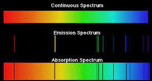
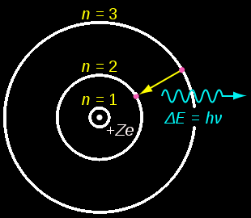

About the Bohr Model of the Atom

The Bohr model of the atom was created by Niels Bohr in 1913. The model was developed in response to a perceived issue in Rutherford’s planetary model. Accelerating charges should emit EMR. This would cause them to lose energy and spiral into the nucleus. Bohr began developing his model in response to this.
Bohr created his model by connecting the concept of quantization to the atom. He did this by analyzing spectroscopy for various elements. Spectroscopy refers to the absorption and emission spectra that are produced when light passes through a gas. By connecting his knowledge with a mathematical formula to determine the wavelengths of the spectra produced, Bohr was able to realize that the lines in the spectra corresponded to the differences between energy levels in a hydrogen atom.
These are the basic principles of the Bohr model. In this game, you will apply the model by choosing to absorb the photon with the matching energy value to the difference between energy levels!